Polityka prywatności
Ta polityka wyjaśnia, jakie informacje są przetwarzane, gdy grasz w gry Moonfleck Labs („my”, „nas”), obecnie Almost Regular Snake na Androida. Jeśli masz pytania, napisz na moonfleck.labs@gmail.com.
To tłumaczenie ma charakter informacyjny. W razie rozbieżności obowiązuje wersja angielska.
W skrócie
- Nie prosimy o konto, imię, e-mail ani żadne inne dane osobowe.
- Twoje wyniki, osiągnięcia, ustawienia i zapisana gra zostają na Twoim urządzeniu. Nigdy ich nie otrzymujemy.
- Gra wyświetla reklamy Google AdMob. Google może zbierać informacje o urządzeniu, aby wyświetlać reklamy i mierzyć ich skuteczność, jak opisano poniżej.
Informacje przechowywane na Twoim urządzeniu
Gra przechowuje na Twoim urządzeniu plik zapisu, w którym są: najlepsze wyniki wraz z datami, osiągnięcia i statystyki gry, ustawienia (język, dźwięk, wibracje), rozpoczęta gra, którą można później kontynuować, liczba gier rozegranych od ostatniej reklamy oraz – na potrzeby prośby o ocenę – liczba ukończonych gier i informacja, czy otwarto stronę gry w sklepie, aby ją ocenić. Ten plik nigdy nie opuszcza Twojego urządzenia i nie jest do nas wysyłany. Odinstalowanie gry lub wyczyszczenie jej danych w ustawieniach Androida usuwa go.
Reklamy (Google AdMob)
Gra jest bezpłatna i wyświetla pełnoekranowe reklamy między grami oraz opcjonalne reklamy z nagrodą, które możesz obejrzeć, aby kontynuować grę. Reklamy dostarcza Google AdMob. Aby wyświetlać, personalizować, ograniczać i mierzyć reklamy oraz zapobiegać oszustwom, Google może zbierać i przetwarzać m.in. następujące informacje:
- identyfikator reklamowy Twojego urządzenia,
- Twój adres IP i przybliżoną lokalizację ustaloną na jego podstawie,
- informacje o urządzeniu i aplikacji (model, system operacyjny, język, wersja aplikacji),
- sposób, w jaki korzystasz z reklam.
Nie otrzymujemy tych informacji w formie, która pozwalałaby Cię zidentyfikować; widzimy tylko zbiorcze raporty (na przykład, ile reklam wyświetlono). Korzystanie z tych danych przez Google podlega zasadom Google:
- Polityka prywatności Google
- Jak Google wykorzystuje informacje z witryn i aplikacji, które korzystają z usług Google
Twoje wybory dotyczące reklam
- Zgoda (EOG, Wielka Brytania i Szwajcaria): jeśli jesteś w jednym z tych regionów, gra przed wyświetleniem spersonalizowanych reklam prosi o zgodę za pomocą formularza zgody Google. Możesz odmówić – wtedy zobaczysz reklamy niespersonalizowane. Swój wybór możesz zmienić w dowolnym momencie: od wersji 1.0.4 otwórz przycisk z tarczą w menu głównym gry i dotknij Zgoda na reklamy. Formularz pojawi się ponownie także po wyczyszczeniu danych gry w ustawieniach Androida.
- Identyfikator reklamowy: możesz go zresetować lub usunąć w ustawieniach urządzenia (Ustawienia › Prywatność › Reklamy albo Ustawienia › Google › Reklamy, w zależności od urządzenia).
- Spersonalizowane reklamy: możesz nimi zarządzać w Moim centrum reklam Google.
Oceny i opinie
Co pewną liczbę ukończonych gier gra może wyświetlić kartę oceny Google Play, a przycisk z sercem w menu głównym otwiera stronę gry w Google Play. Oceny i opinie obsługuje Google Play zgodnie z Polityką prywatności Google; sama gra niczego nie wysyła. Opinie widzimy w Google Play Console w takiej postaci, w jakiej Google pokazuje je deweloperom (ocena, treść opinii oraz urządzenie i wersja aplikacji, z których pochodzi), i możemy tam na nie odpowiadać. Gra nigdy nie dowiaduje się, czy i jak ją oceniono.
Uprawnienia
- Internet i stan sieci: do wczytywania reklam i formularza zgody.
- Wibracje: do reakcji wibracyjnych podczas gry. Możesz je wyłączyć w menu gry.
Dzieci
Nasze gry nie są skierowane do dzieci poniżej 13 roku życia i nie zbieramy świadomie danych osobowych dzieci. Jeśli uważasz, że dziecko przekazało dane osobowe za pośrednictwem naszych gier, skontaktuj się z nami, a pomożemy je usunąć.
Bezpieczeństwo i przechowywanie danych
Nie prowadzimy serwerów, na których przechowywane byłyby Twoje dane. Dane na Twoim urządzeniu pozostają tam, dopóki ich nie usuniesz lub nie odinstalujesz gry. Dane zbierane przez Google są przechowywane zgodnie z zasadami Google.
Twoje prawa
W zależności od miejsca zamieszkania (na przykład na mocy RODO lub CCPA) możesz mieć prawo dostępu do danych osobowych, ich sprostowania lub usunięcia albo wniesienia sprzeciwu wobec ich przetwarzania. Ponieważ nie przechowujemy Twoich danych osobowych, większość próśb najlepiej kierować do Google za pomocą powyższych linków, ale zawsze możesz też napisać do nas – chętnie pomożemy.
Zmiany polityki
Jeśli zmienimy tę politykę, zaktualizujemy tę stronę i podaną wyżej datę. O istotnych zmianach poinformujemy także w opisie gry w sklepie.
Kontakt
Moonfleck Labs
moonfleck.labs@gmail.com